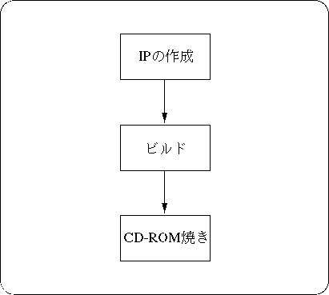

Return to previous page | Return to menu ｜ Go to next page
This chapter explains how to burn a user-created game onto a CD-ROM.
CD-ROM is created in PC DOS English mode environment. Therefore, the file name is limited to 8 characters + 3 characters due to DOS restrictions.
In order to burn a user-created game onto a CD-ROM, it is necessary to prepare binary IP, programs, and data.
Fig. 3-1 shows the basic flow of creating a CD-ROM, and Fig. 3-2 shows the files required for creating a CD-ROM.
